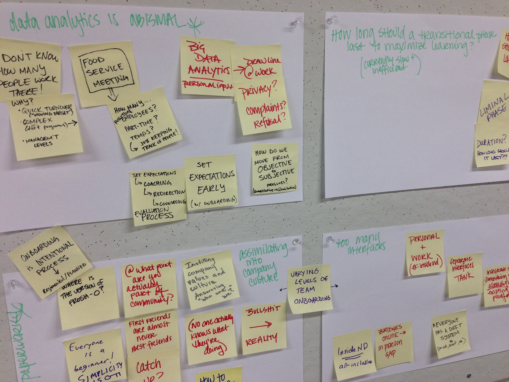
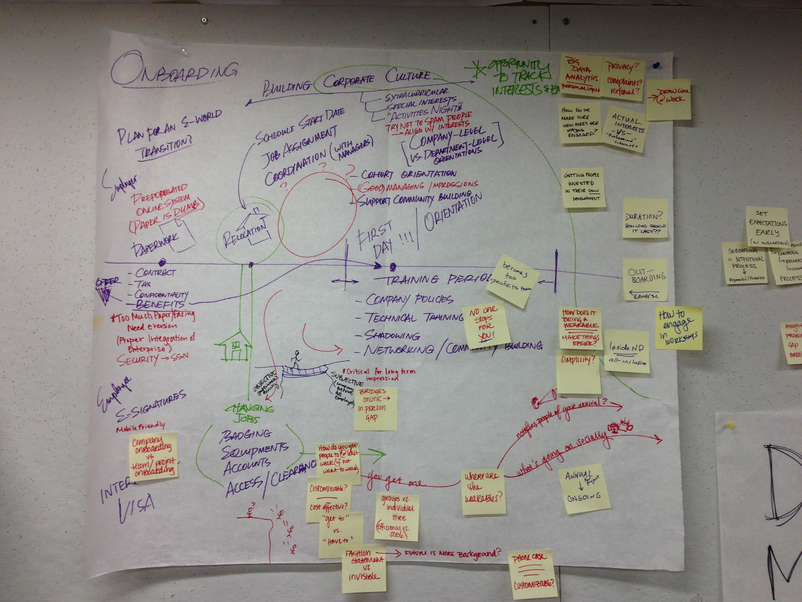
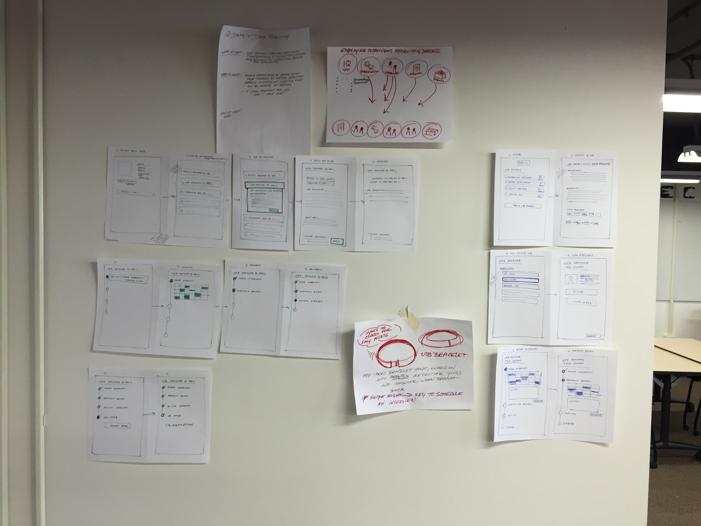
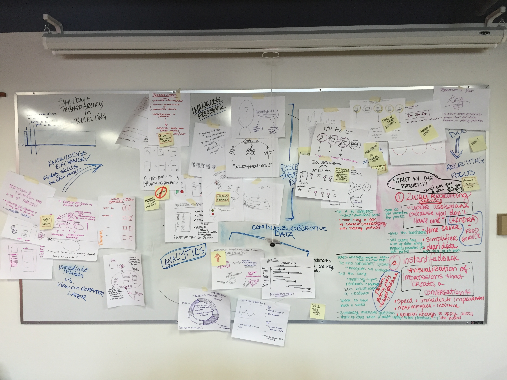

01. EMPATHIZE.
Our first step was fully understanding what HR is, what they do, how they do it, what they work with, etc.
To do so, we conducted interviews with Notre Dame's Human Resources department as well as some preliminary online research.


Developing Personas 
To do so, we conducted interviews with Notre Dame's Human Resources department as well as some preliminary online research.
02. DEFINE.
Because we found HR to be a massive system, we broke it down into different facets and focused on the Onboarding side.
With all our newly acquired knowledge, we focused finding the major pain points by creating a user journey (for both the HR employee and the new hire) and by grouping notes to find meaningful insights.
With all our newly acquired knowledge, we focused finding the major pain points by creating a user journey (for both the HR employee and the new hire) and by grouping notes to find meaningful insights.

Grouping Inisights

Onboarding Journey Map
03. IDEATE.
In this stage, we came up with as many ideas as possible, anywhere from bringing back the pager, to a modular recruiting process, to an industry standard application, to a feedback capturing and analyzing tool (the one we landed on). Through the process, we consulted ideas with mentors, as well as experts in the field.



04. PROTOTYPE.
In order to prototype this, we started with a preliminary design, considering what the overall flow of the product would have to be. What screens would make sense where and what functionalities they should have. Then, I started designing screens in Sketch, thinking more in depth about interactions, as well as establishing an overall aesthetic for the product.
Using Framer JS, we created a prototype for the software on both a desktop and a mobile app. (I created the desktop prototype and the Computer Science expert, Ted Cogan, created the mobile prototype)
Using Framer JS, we created a prototype for the software on both a desktop and a mobile app. (I created the desktop prototype and the Computer Science expert, Ted Cogan, created the mobile prototype)
05. TEST.
Throughout the entire process, our team's Anthropology expert, Molly Siedel, constantly consulted with HR employees to get their feedback.